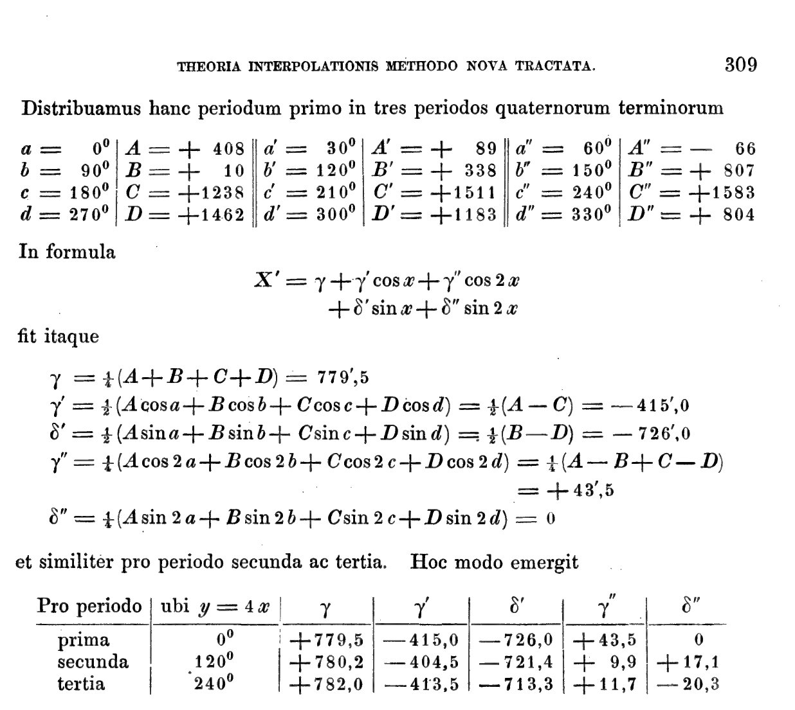
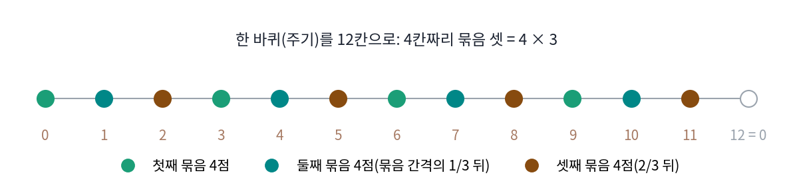
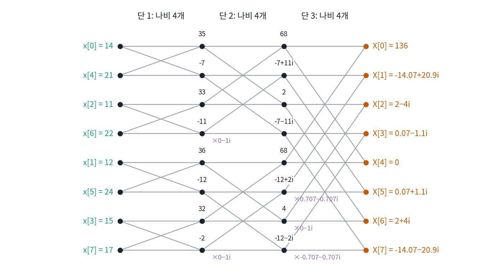
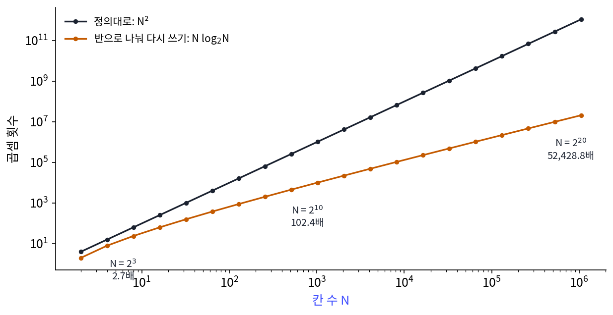
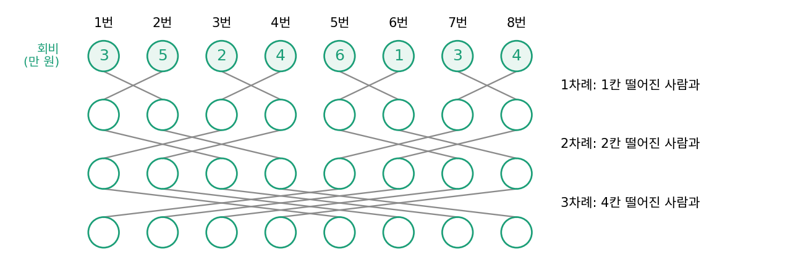
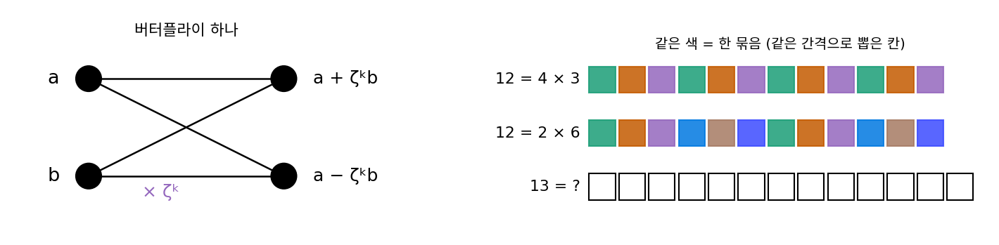
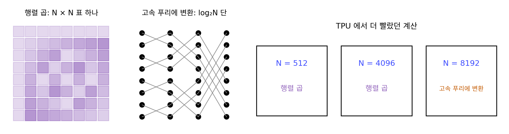

고속 푸리에 변환: 반으로 나눠 계산을 다시 쓴다
칸 8개의 계수를 정의대로 구하는 데 곱셈이 64번 들었다. 칸이 220 = 1,048,576개면 계수 하나에 곱셈이 백만 번, 계수 전부에 1.0995 × 1012번이다. 1초에 곱셈을 10억 번 하는 컴퓨터로 1,099.5초, 18.33분이 걸린다. 그런데 기온 계산을 돌이켜 보면 수상한 곳이 있다. 0시·6시·12시·18시 네 칸만으로 구한 계수가 [68, −7 + 11i, 2, −7 − 11i]였는데, 여덟 칸의 계수를 구할 때 이 네 칸에는 똑같은 화살표들이 몇 번이고 다시 곱해졌다. 이미 한 계산을 다시 쓸 수는 없을까?
역사: 핵실험 감시라는 급한 쓸모, 160년 묻혀 있던 계산
1963년 케네디 대통령의 과학자문위원회 회의에서 지하 핵실험을 어떻게 잡아낼지가 논의되었다. 소련이 나라 안 사찰을 받아들이지 않았으므로 핵실험 금지 조약을 지키는지 보려면 나라 밖의 지진계로 땅의 진동을 재고, 그 기록을 주파수로 나눠 지진과 폭발을 가려야 했다. 문제는 계산량이었다. 칸 N개의 푸리에 변환에는 N²에 비례하는 계산이 든다고 널리 믿어졌고, 지진계 기록을 그렇게 처리하기에는 그때 컴퓨터로 턱없이 모자랐다.
같은 위원회의 위원이던 통계학자 튜키(John W. Tukey)는 N이 두 수의 곱 N = ab이면 급수를 b항짜리 작은 급수 a개로 나눠 계산량을 N²에서 N(a + b)로 줄일 수 있고, 이것을 거듭하면 N log N에 비례하게 된다는 것을 보였다. 역시 위원이던 물리학자 가윈(Richard L. Garwin, 그때 컬럼비아 대학 안의 IBM 왓슨 과학 연구소 소속)은 회의에서 튜키와 나눈 이야기를 적은 노트를 들고, 1963년 말 IBM 왓슨 연구소에 막 들어온 쿨리를 찾아갔다. 쿨리의 1987년 회고에 따르면 가윈은 헬륨-3 결정 안의 스핀 방향이 어떤 주기로 되풀이되는지 알고 싶다고 설명했고, 쿨리는 「나중에야 그가 원격 지진 감시에 훨씬 더 관심이 있었다는 것을 알았다」고 적었다. 쿨리는 그 일의 중요성을 몰라 자기 연구보다 뒤로 미뤘는데, 가윈이 이따금 전화를 걸어 왔고 몇 번은 쿨리의 상사에게 걸었다. 1997년에 남긴 구술 기록에서도 쿨리는, 가윈의 속셈은 소련 둘레에 지진계를 심는 것이었지만 처음에는 그 이야기를 하지 않고 다른 문제를 지어 내 가져왔다고 회상했다.
IBM 안에서는 이 방법을 특허로 낼지가 논의되었고, 결국 누구나 쓰게 공개하기로 했다. 쿨리가 쓴 원고를 튜키가 고쳤고, 두 사람이 함께한 일은 전화 몇 통이 전부였다고 쿨리는 적었다. 논문 「복소 푸리에 급수의 기계 계산을 위한 알고리즘(An algorithm for the machine calculation of complex Fourier series)」은 1965년 4월 『계산 수학(Mathematics of Computation)』 19권 297~301쪽에 실렸다. 쿨리와 같은 부서에 있으면서 컬럼비아 대학 라몬트 지구물리 연구소의 겸임 교수이던 지구물리학자 앨솝(Lee Alsop)이 래트섬 지진을 잰 지진계 기록 2048칸에 이 방법을 써 보니 약속한 만큼 빨랐다. 컴퓨터로 만든 자료로 더 시험해 보니 정확도도 옛 방법보다 훨씬 좋았다.
논문이 나오자 「전에도 있던 방법」이라는 소식이 잇달았다. 1942년 대니얼슨(G. C. Danielson)과 란초시(Cornelius Lanczos)는 액체의 엑스선 산란 자료를 다루며 「칸 수를 두 배로 늘려도 수고는 두 배를 조금 넘을 뿐」인 방법을 썼다. 손 계산으로 계수 8개에 10분, 64개에 140분쯤 걸렸다고 적었는데, 이 줄이기를 「원하면 두세 번 거듭할 수 있다」고 덧붙이는 데서 멈췄다. 쿨리는 이 문장을 두고, 전자계산기가 있었다면 칸 수를 2의 아무 거듭제곱까지나 늘렸을 것이라고 적었다.
가장 이른 것은 가우스였다. 1984년 하이드먼과 동료들이 가우스 전집 3권에 실린 라틴어 원고 「새로운 방법으로 다룬 보간 이론」을 번역해 보니, 칸 N = N₁N₂개를 N₁칸짜리 묶음 N₂개로 나눠 계수를 구하고 묶음의 계수를 다시 합치는 방법이 들어 있었다. 소행성 팔라스의 궤도를 다룬 보기에서 그는 칸 12개를 4 × 3과 3 × 4로 나눠 계산했고, 칸 수가 셋 이상의 수의 곱이면 더 잘게 나눌 수 있다고 적었다. 하이드먼과 동료들은 이 원고가 1805년 10~11월에 쓰였다고 추정했다(1805년 3월 편지에 적은 소행성 주노의 궤도 이심률 0.254236 이 원고의 보기에 나온다). 가우스는 1806년 1월 천문학자 올베르스에게 원고를 보냈고, 올베르스는 출판을 권했지만 뒷부분은 따라가지 못했다고 답했다. 가우스는 감추지는 않았으나 출판할 생각도 없었던 듯하고, 원고는 그가 죽은 뒤인 1866년에야 전집에 실렸다. 그 무렵 궤도 계산은 다른 방법이 주류였고, 원고는 라틴어에 지금과 다른 기호로 적혀 있어 계산법으로 주목받지 못했다. 1805년에 쓰인 방법이 쓸모를 만난 것은 160년 뒤인 1965년이었다.



1942년에 대니얼슨과 란초시가 이미 반으로 나눴는데, 왜 두세 번에서 멈췄어요? 끝까지 나누면 됐잖아요.

손으로 계수 64개에 140분쯤 걸렸다고 했죠. 앨솝이 다룬 지진계 기록 2048칸을 같은 방법으로 손으로 하면 얼마나 걸릴지 대략 따져 볼래요?

음, 수고가 N log₂N에 비례한다고 치면 2048 × 11을 64 × 6으로 나눠서 59배쯤이니까… 140분의 59배면 137시간이요. 기록 하나에만 그만큼이에요.

게다가 단을 하나 내려갈 때마다 중간 값을 전부 적어 두고 다시 꺼내 써야 하잖아요. 종이 위에서는 순서가 하나만 꼬여도 뒤가 다 틀리겠어요.

끝까지 나누려면 기계가 필요했던 거죠. 그런데 1963년에는 컴퓨터가 있었는데도, 칸 N개의 변환에는 N²에 비례하는 계산이 든다고 널리 믿었어요. 가우스의 방법은 라틴어 원고로 전집 안에 있었고요.

아, 손으로는 끝까지 못 나누고, 기계가 생긴 뒤에는 끝까지 나눌 수 있다는 걸 아는 사람이 드물었던 거네요. 튜키가 거듭하면 N log N이 된다고 보이고, 핵실험 감시라는 급한 쓸모가 붙어서야 퍼진 거고요.

그럼 반으로 나눌 때 다시 쓰는 계산이 뭔지 기온 여덟 칸으로 보고 싶어요. 짝수 칸 넷의 계수가 여덟 칸의 계수 어디어디에 들어가요?
기온 여덟 칸을 버터플라이 세 단으로
기온 여덟 칸을 짝수 번째 칸과 홀수 번째 칸으로 나눈다. 짝수 칸은 0시·6시·12시·18시의 [14, 11, 21, 22], 홀수 칸은 3시·9시·15시·21시의 [12, 15, 24, 17]이다. 가우스의 묶음 나누기에서 N₁ = 4, N₂ = 2인 경우다. 각각 4칸짜리 이산 푸리에 변환을 하면
- 짝수 칸: E = [68, −7 + 11i, 2, −7 − 11i]
- 홀수 칸: O = [68, −12 + 2i, 4, −12 − 2i]
이고, 곱셈은 4 × 4 = 16번씩 32번이다. 여덟 칸의 식에서 칸 2m의 화살표는 ζ2mk, 칸 2m + 1의 화살표는 ζk × ζ2mk이다. ζ²은 1/4 바퀴 돌린 화살표, 다시 말해 4칸짜리 변환의 화살표이므로, 여덟 칸의 계수는 두 반쪽 계수로 바로 적힌다.
X[1] = E[1] + ζ × O[1] = (−7 + 11i) + (0.707 − 0.707i)(−12 + 2i) = −14.071 + 20.899i
X[5] = E[1] + ζ⁵ × O[1] = (−7 + 11i) − (0.707 − 0.707i)(−12 + 2i) = 0.071 + 1.101i
X[1]과 X[5]가 같은 E[1]과 O[1]을 쓴다. 4칸짜리 계수는 번호가 4마다 되풀이되고(4칸짜리 화살표는 네 번 곱하면 1이다), ζ⁴ = −1이라 ζ⁵ = −ζ이기 때문이다. 곱 ζO[1] = −7.071 + 9.899i를 한 번 구해 더하면 X[1], 빼면 X[5]다. 두 값에서 두 값을 만드는 이 더하고 빼기를 그림으로 그리면 X자 모양이 날개를 편 나비와 닮아서 버터플라이 (두 값을 더하고 빼는 한 쌍의 계산 / butterfly)라 부른다(쿨리의 회고에 이 이름이 신호 흐름 그림의 모양에서 왔다고 나온다). 4칸 변환도 같은 방법으로 2칸 변환 둘로, 2칸 변환은 더하기 하나와 빼기 하나로 나뉜다. 칸 8개는 2를 세 번 곱한 수라서 버터플라이가 세 단 선다.

단마다 출력 칸이 여덟 개이니, 출력 칸 하나를 만들 때 곱셈 한 번(×1도 센다)으로 세면 단마다 8번, 세 단에 24번이니, 정의대로의 64번에 비해 2.7배 줄었다. 칸 수 N이 2의 거듭제곱이면 단이 log₂N개라 곱셈이 N log₂N번이다. 이렇게 칸을 반으로 거듭 나눠 작은 변환의 결과를 다시 쓰는 계산법을 고속 푸리에 변환 (반으로 나눠 다시 쓰는 이산 푸리에 변환 / fast Fourier transform, 줄여서 FFT)이라 한다.
칸 수가 커질수록 차이가 벌어진다.
| 칸 수 N | 정의대로 N² | 버터플라이 N log₂N | 몇 배 |
|---|---|---|---|
| 8 | 64 | 24 | 2.7 |
| 1,024 | 1,048,576 | 10,240 | 102.4 |
| 65,536 | 4,294,967,296 | 1,048,576 | 4,096 |
| 1,048,576 | 1,099,511,627,776 | 20,971,520 | 52,428.8 |
칸 220개에서는 5만 2천 배쯤이어서, 1초에 곱셈 10억 번이면 18.33분 걸리던 계산이 0.021초가 된다. 가로세로 1024칸짜리 사진 한 장의 칸 수가 220이다. 오디오 편집기와 휴대폰이 스펙트럼을 눈 깜짝할 사이에 그리는 것은 계산을 다시 쓰는 이 구조 덕이다.

ML에서: 곱셈 수가 적다고 늘 빠른 것은 아니다
FNet 의 저자들은 구현에서 흥미로운 것을 보고했다. GPU 에서는 길이 512부터 8192까지 언제나 고속 푸리에 변환이 행렬 곱보다 빨랐다. 그런데 TPU 에서는 길이 4096까지는 이산 푸리에 변환 행렬을 미리 만들어 두고 행렬 곱으로 계산하는 편이 빨랐고, 그보다 길 때만 고속 푸리에 변환이 빨랐다. 그래서 GPU 판은 늘 고속 푸리에 변환을, TPU 판은 길이 4096까지 행렬 곱을 쓴다. 곱셈 횟수로는 길이 512에서도 행렬 곱이 몇십 배 많은데 왜 그런 일이 생기는지는 아래 문제 9에서 따진다.
문제 7. 여덟 명이 회비 합 알기
동아리 회원 여덟 명이 각자 낸 회비(만 원)가 3, 5, 2, 4, 6, 1, 3, 4 다. 단체 대화방 없이 한 사람이 한 번에 한 사람과만 쪽지를 주고받으며, 여덟 명 모두가 회비 합을 알아야 한다. 한 「차례」에는 모두가 동시에 한 사람씩과 쪽지를 주고받을 수 있다. (가) 각자 나머지 일곱 명에게 하나씩 물어보면 몇 차례, 쪽지 몇 장이 드는가? (나) 첫 차례에는 1번과 2번, 3번과 4번처럼 이웃끼리 지금까지 아는 합을 바꿔 더하고, 둘째 차례에는 두 칸 떨어진 사람끼리, 셋째 차례에는 네 칸 떨어진 사람끼리 바꿔 더하면? (다) 회원이 1024명이면?

(가)는 한 차례에 한 명씩 물으니까 일곱 차례, 쪽지는 8 × 7 = 56장이요. (나)는 첫 차례 뒤에 [8, 8, 6, 6, 7, 7, 7, 7]이 되고, 둘째에 모두 14, 셋째에 모두 28이에요. 세 차례, 쪽지 24장이네요.

둘째 차례에 1번이 받은 6은 누구의 회비예요?
3번과 4번 회비의 합이요. 3번이 첫 차례에 이미 더해 둔 걸 그대로 받았어요. 1번이 3번, 4번에게 따로 물어볼 필요가 없었던 거네요.
차례마다 아는 사람 수가 두 배로 늘어. 1, 2, 4, 8이니까 log₂8 = 3차례야. (다)는 일일이 물으면 1024 × 1023 = 1,047,552장, 바꿔 더하면 10차례에 10,240장이야.
기온 버터플라이 그림의 칸 수와 단 수를 떠올려 볼래요?
칸 8개에 세 단, 단마다 곱셈 8번이었어요. 그럼 24번… 쪽지도 24장이었는데요.

둘 다 8 × log₂8이네. 우연이야?
쪽지 돌리기에서 한 차례의 일이 왜 여덟 장으로 끝났죠?

남이 이미 계산한 부분합을 받아 썼으니까요. 단마다 일이 칸 수만큼만 들고, 단의 수는 반으로 나눌 수 있는 횟수예요.
그럼 버터플라이랑 쪽지 돌리기는 완전히 같은 거야?
하나 달라. 회비는 모두가 같은 합 하나를 알면 되지만, 버터플라이에서는 칸마다 트위들 팩터를 곱해서 서로 다른 계수 여덟 개를 만들어.
문제 8. 버터플라이 하나의 곱셈, 그리고 칸 12개
(가) 버터플라이 하나는 위 값 a 와 아래 값 b 에서 a + ζkb 와 a − ζkb 를 만든다. 칸 8개 버터플라이 세 단에서 곱셈은 실제로 몇 번 필요한가? 그 가운데 1, −1, i, −i 를 곱하는 것(숫자 자리만 바꾸거나 부호만 바꾸면 되는 곱)을 빼면 몇 번이 남는가? (나) 가우스의 팔라스 보기처럼 칸이 12개면 2의 거듭제곱이 아니다. 튜키의 셈 N(a + b) 로 12 = 4 × 3, 2 × 6 으로 나눌 때의 곱셈을 정의대로의 144번과 비교하라. (다) 칸이 13개면 어떻게 되는가?

(가)는 출력 칸마다 곱셈 하나니까 본문에서 센 대로 24번이요.
버터플라이 하나에서 a + ζkb와 a − ζkb를 만들 때 ζkb를 두 번 계산해요?
아, 한 번 구해서 더하고 빼면 돼요. 버터플라이가 단마다 4개, 세 단에 12개니까 곱셈은 12번이에요. 위젯 3에서 「버터플라이 하나의 곱을 두 출력이 나눠 쓰는 것으로 세기」를 켜면 12번이 나와요.
그림의 트위들 팩터를 보면 첫 단은 전부 1이고, 둘째 단은 1과 −i, 셋째 단에 0.707 − 0.707i와 −0.707 − 0.707i 둘만 진짜 곱셈이야. 12번 가운데 2번만 남아. 칸이 1024개면 버터플라이 곱셈 5120번 가운데 3586번이 남고.
(나)와 (다)는요?

(나)부터 튜키의 셈에 넣어 볼게요. 12 = 4 × 3이면 12 × (4 + 3) = 84번, 2 × 6이면 12 × 8 = 96번이에요.
둘 다 144번보다 적네. 4 × 3 쪽이 더 적고.

가우스가 4 × 3과 3 × 4를 고른 게 우연이 아니었네요.
13은 어떻게 나눌 수 있죠?

1과 13으로밖에 안 나뉘어요. 나눌 데가 없으니 이 나누기로는 하나도 안 줄어요.
그래서 칸 수를 2의 거듭제곱으로 맞춰 쓰는구나.

그래요. 그래서 실제 프로그램은 칸 수를 작은 소수들의 곱으로 고르거나, 신호 끝에 0을 붙여 칸 수를 2의 거듭제곱으로 맞추기도 해요(제로 패딩).
문제 9. 행렬 곱이 더 빠른 칩
FNet 은 TPU 에서 길이 4096 까지 이산 푸리에 변환을 행렬 곱으로 계산했다. (가) 길이 512, 4096, 8192 에서 행렬 곱의 곱셈 수 N² 와 고속 푸리에 변환의 N log₂N 은 각각 몇이고 몇 배 차이인가? (나) 곱셈이 몇십 배 많은 쪽이 왜 더 빠를 수 있는가? (다) 길이가 아주 길어지면 왜 결국 고속 푸리에 변환이 이기는가?


(가)는 512에서 262,144 대 4,608로 56.9배, 4096에서 341.3배, 8192에서 630.2배예요. 곱셈을 56배나 더 하는데 더 빠르다니, 걸리는 시간은 곱셈 수에 비례할 텐데 논문이 잘못 잰 거 아닐까요?
민준 학생, PyTorch에서 for 문으로 원소를 하나씩 곱했을 때와 torch.matmul 로 한 번에 곱했을 때를 비교해 본 적 있죠. 곱셈 수는 같았는데 시간은요?
matmul 이 비교도 안 되게 빨랐어요. 곱셈 수가 같아도 하드웨어가 한꺼번에 하는 일과 따로따로 하는 일은 시간이 달라요.
시간이 곱셈 수에만 달린 게 아니구나. 그럼 TPU 는 큰 행렬 곱을 하려고 만든 칩이니까 행렬 곱은 곱셈 하나당 시간이 아주 짧겠네.
버터플라이는 단마다 값을 뒤섞어 다시 읽어야 하니까 칩이 잘하는 꼴이 아니고. 논문도 TPU 가 GPU 보다 행렬 곱에 더 맞춰져 있고 GPU 쪽 고속 푸리에 변환 구현이 더 좋기 때문일 거라고 짐작했어.
그래도 8192에서는 TPU 에서도 고속 푸리에 변환이 이겼어요. (다)는요?

곱셈 수 차이가 56.9배, 341.3배, 630.2배로 커지긴 하는데, 어느 길이에서 멈추는 거 아니야?
비가 N/log₂N이니까 안 멈춰. 끝없이 커져.
그럼 곱셈 하나당 시간이 몇십 배 차이 나는 건요?
비가 수백 배로 벌어지면 따라잡혀요. 4096에서 341배, 8192에서 630배로 커지는 사이 어디쯤에서 뒤집힌 거예요.

동네 가게까지는 걸어가는 게(행렬 곱) 버스(고속 푸리에 변환) 기다리는 것보다 빠르지만, 멀리 갈수록 결국 버스가 이기는 것과 비슷하네요.